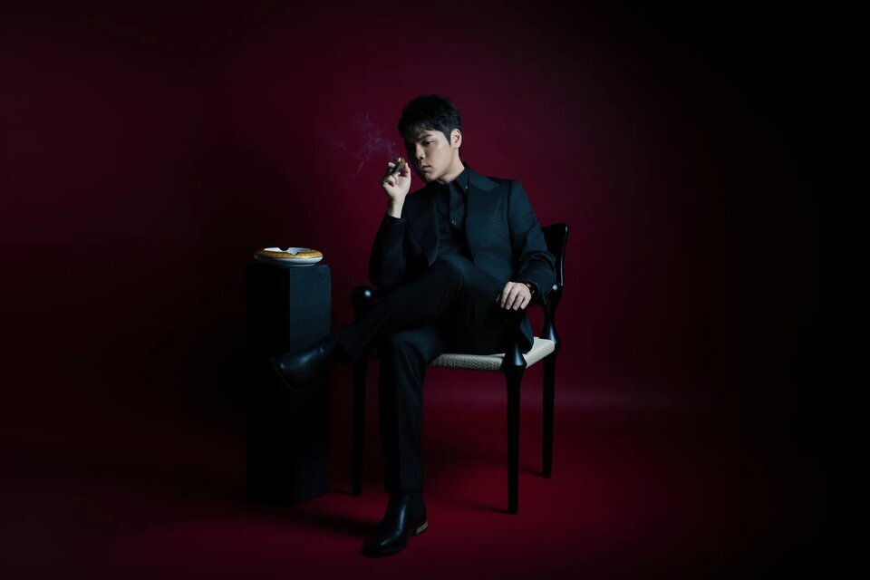

SIGNATURE·Flagship
One strategy. One coherent image.
從未來角色、職業屬性與實際應用需求出發，整合形象定位、服裝選品、妝髮造型與一日影像拍攝。
每一項專業，都從同一個定位出發——讓產出的影像不只好看，更能真正支援官網、社群、簡報與媒體。
我們不是在拍攝當天才決定你要成為什麼樣子，而是在鏡頭開啟之前，就先把角色、服裝、妝髮與影像用途對齊。
For Whom這項企劃適合誰
Signature 適合希望建立完整專業形象，而不是只完成一次拍攝的人。
Why DifferentSignature 的核心差異
先確認你希望被誰看見、如何被理解、影像用在哪些場景——再決定穿什麼、怎麼拍。
依角色與身形提出選品，由 CHUN.EN 統一採購——拍攝中的服裝，能延續至工作與公開場合。
拍攝前先確認使用版位，反向規劃構圖與留白——不讓你拍完才發現素材不夠用。
What's Included標準企劃內容
釐清這次影像需要建立的專業印象。
建立整體視覺方向，作為服裝、妝髮與影像的共同基準。
提出選品與報價，確認後由 CHUN.EN 統一採購至定裝。
試穿、搭配與妝髮配置，在拍攝日之前全部確認完成。
依角色與用途規劃畫面情境，現場由攝影師即時創作調整。
妝髮、拍攝與形象顧問全程現場統籌，一日完成。
依約定張數，以雲端連結交付高畫質精修檔。
交付時附上選圖、裁切與各版位的使用指南。
交付後 90 日內，原團隊在專案群組協助影像使用問題。
Scope標準內容與選配項目
Timeline配置・交期・時程
標準內容以平面影像為主；形象影片與自媒體素材可依用途加選。
平面影像拍攝後 60 日內交付（通常提前完成）；動態第一版 30 日內。
有明確急用需求時，可優先完成兩張精修照片。
定位與企劃 → 採購與準備 → 一日拍攝 → 後製與交付，拍攝前約 60 日啟動。
FAQ常見問題
實際服裝組數、平面與動態配置、精修數量、交付時程及選配內容，依正式提案與合約為準。商品採購費、特殊陪同選購、急件後製、指定尺寸裁切與品牌應用製作，不包含於未註明的標準服務內容。